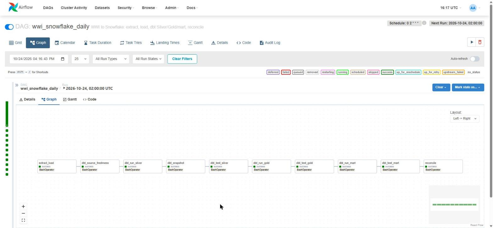
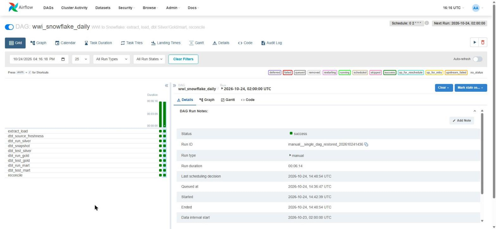

Chapter 12 · Operating It
Orchestration with Airflow
Lab:Airflow 2.7.2 · CeleryExecutor+dags/wwi_snowflake_daily.pyThe scheduled run took 7 minutes 9 seconds, all 10 tasks green.
Airflow's job here is small and important: run the steps in order every night, retry a step that hits a passing network blip, stop when something is really wrong, and show what happened. The DAG is deliberately plain: ten BashOperator tasks, each one shell command. No decorators, no custom operators, nothing you can't run by hand.
The whole DAG
from datetime import datetime, timedelta
from airflow import DAG
from airflow.operators.bash import BashOperator
PROJECT = "/opt/airflow/wwi_snowflake"
DBT = f"cd {PROJECT}/dbt && dbt" # every dbt command runs from the dbt project folder
DBT_ARGS = "--profiles-dir . --target prod"
with DAG(
dag_id="wwi_snowflake_daily",
start_date=datetime(2026, 10, 1),
schedule="0 2 * * *", # every day at 02:00
catchup=False,
max_active_runs=1,
default_args={"owner": "data-engineering", "retries": 1, "retry_delay": timedelta(minutes=5)},
) as dag:
extract_load = BashOperator(task_id="extract_load",
bash_command=f"cd {PROJECT}/extract && python extract_load.py --all")
dbt_source_freshness = BashOperator(task_id="dbt_source_freshness",
bash_command=f"{DBT} source freshness {DBT_ARGS}")
dbt_run_silver = BashOperator(task_id="dbt_run_silver", bash_command=f"{DBT} run --select silver {DBT_ARGS}")
dbt_snapshot = BashOperator(task_id="dbt_snapshot", bash_command=f"{DBT} snapshot {DBT_ARGS}")
dbt_test_silver = BashOperator(task_id="dbt_test_silver",
bash_command=f"{DBT} test --select silver --indirect-selection cautious {DBT_ARGS}")
dbt_run_gold = BashOperator(task_id="dbt_run_gold", bash_command=f"{DBT} run --select gold {DBT_ARGS}")
dbt_test_gold = BashOperator(task_id="dbt_test_gold",
bash_command=f"{DBT} test --select gold --indirect-selection cautious {DBT_ARGS}")
dbt_run_mart = BashOperator(task_id="dbt_run_mart", bash_command=f"{DBT} run --select mart_sales {DBT_ARGS}")
dbt_test_mart = BashOperator(task_id="dbt_test_mart", bash_command=f"{DBT} test --select mart_sales {DBT_ARGS}")
reconcile = BashOperator(task_id="reconcile", bash_command=f"cd {PROJECT}/extract && python reconcile.py")
(extract_load >> dbt_source_freshness >> dbt_run_silver >> dbt_snapshot >> dbt_test_silver
>> dbt_run_gold >> dbt_test_gold >> dbt_run_mart >> dbt_test_mart >> reconcile)- One command per task. Copy any
bash_commandinto a terminal in the worker and you run exactly what Airflow runs. retries: 1absorbs a short network failure; a real error fails twice and stops the chain.max_active_runs=1stops two nights' runs from loading at the same time;catchup=Falsestops Airflow back-filling every day since the start date.- Secrets aren't in the DAG at all: the scripts read
secrets/wwi.env, and dbt uses the key file.
A real run
The first scheduled-style run, triggered from the command line after the initial load. Nothing had changed in the source, so the extract found no rows and the incremental facts merged nothing, and every test and check still ran:
| Task | Duration | State |
|---|---|---|
| extract_load | 1 m 12 s | success · 0 rows |
| dbt_source_freshness | 30 s | success |
| dbt_run_silver | 35 s | success · 31 views |
| dbt_snapshot | 44 s | success · 5 snapshots |
| dbt_test_silver | 1 m 8 s | success · 62 tests |
| dbt_run_gold | 47 s | success · 14 models |
| dbt_test_gold | 40 s | success · 38 tests |
| dbt_run_mart | 31 s | success · 7 models |
| dbt_test_mart | 29 s | success · 23 tests |
| reconcile | 15 s | success · 7 checks |
| Whole run | 7 m 9 s | success |
docker exec airflow_airflow-scheduler_1 airflow dags unpause wwi_snowflake_daily
docker exec airflow_airflow-scheduler_1 airflow dags trigger wwi_snowflake_daily
docker exec airflow_airflow-scheduler_1 airflow dags list-runs -d wwi_snowflake_daily

When a task fails
- Read the log of the red task in the Airflow UI. It is the output of one command, so the error is near the end.
- Fix the cause: a SQL error in a model, a source change, a credential.
- Clear the failed task (with "Downstream" selected). Airflow re-runs it and everything after it. Every step is safe to repeat: the extract resumes from its high-water mark, staging keeps the latest row, facts merge on their keys.
Key takeaways
- Ten BashOperator tasks, one shell command each, in one chain.
- Retries for blips, max one active run, no catch-up.
- Every step is idempotent, so "clear and re-run" is always safe.